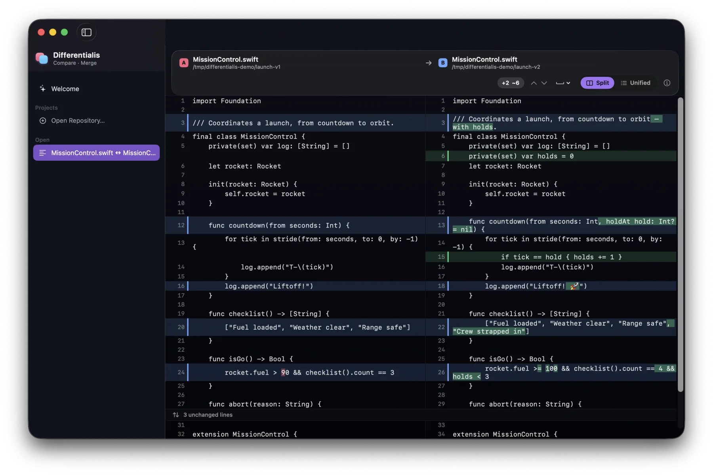
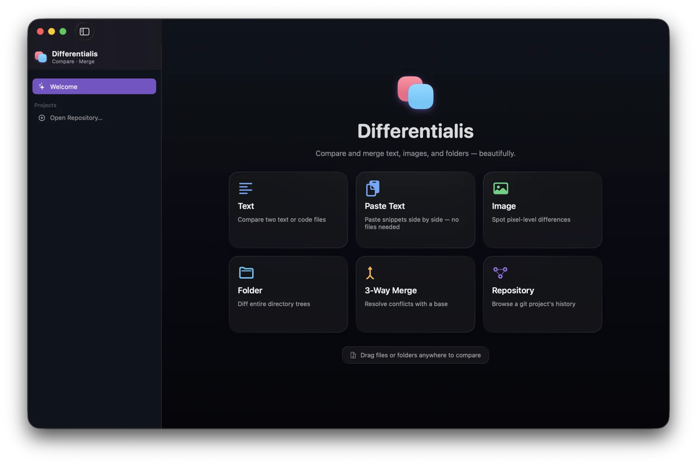
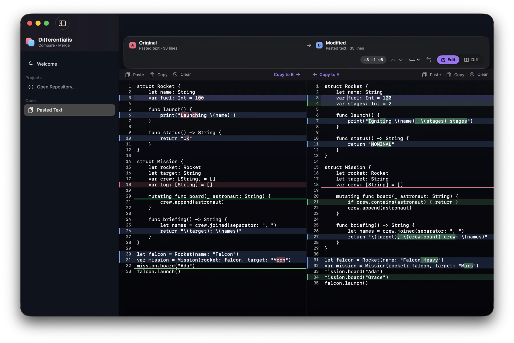
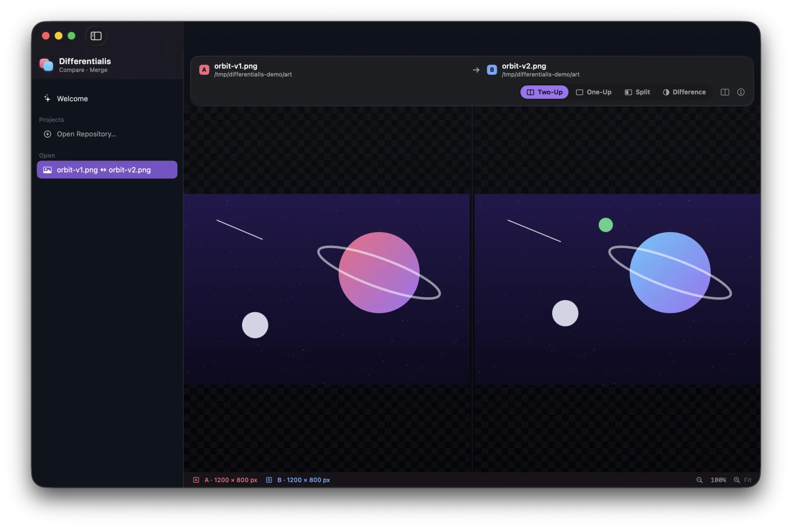
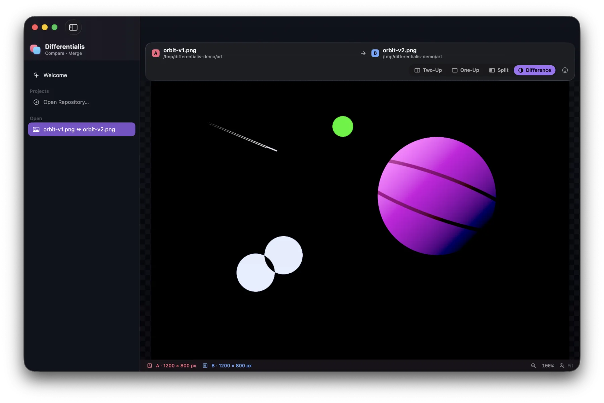
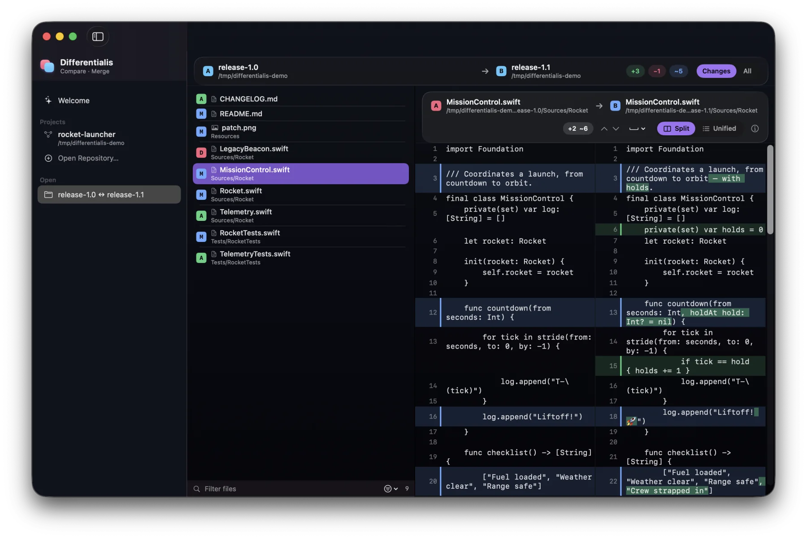
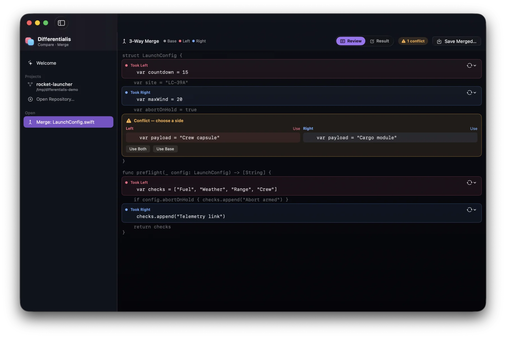
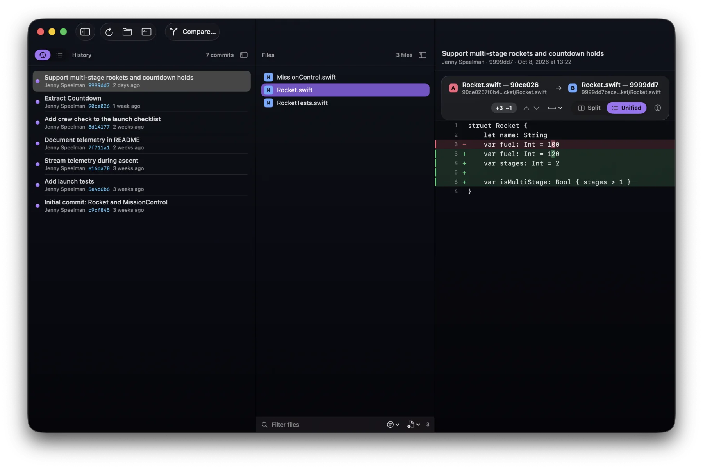
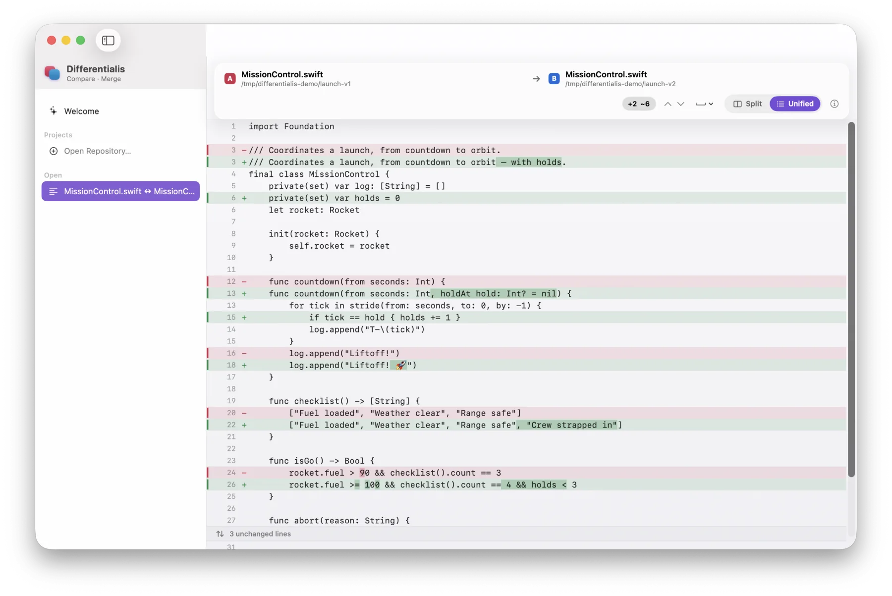
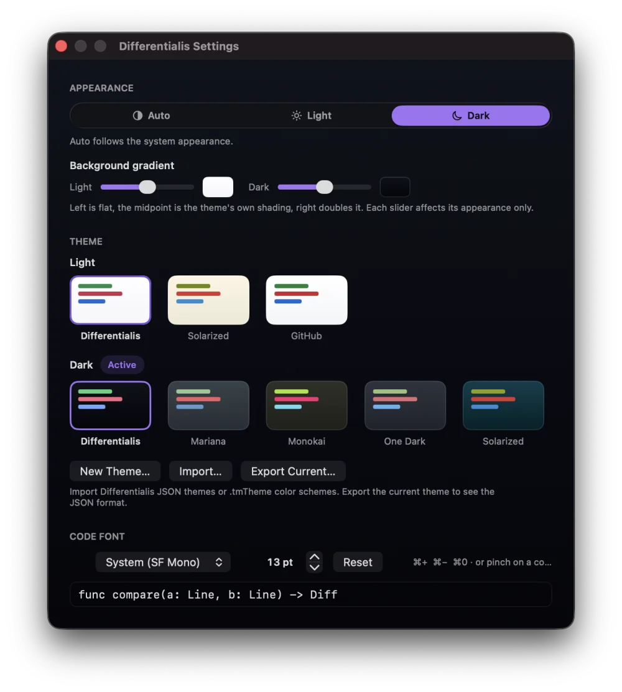

Text diff that reads minds
A from-scratch Myers engine with character-level highlights, split and unified layouts, whitespace-insensitive matching, line-ending checks, collapsible regions, and jump-to-change navigation.
macOS · SwiftUI · Liquid Glass
A native Mac app for comparing and merging text, images, and folders, with git built in. Paste snippets straight in, merge against a base, or browse a repository's history. Native SwiftUI on Liquid Glass, with diff and merge engines written from scratch in Swift.
v0.2.2 · Apple-notarized · free & open source · requires macOS 26

What it does
A from-scratch Myers engine with character-level highlights, split and unified layouts, whitespace-insensitive matching, line-ending checks, collapsible regions, and jump-to-change navigation.
No files needed. Paste two snippets side by side, watch the diff update as you type, and copy any change across in one keystroke.
Two-Up, One-Up blink, Split reveal, and a false-color Difference mode where only the changed pixels glow, with synced zoom and pan.
A recursive scan tags every file Added, Removed, Modified, or Identical. Filter by name or status, then drill straight into the right diff.
Base, left, and right with an editable result. Take a side, take both, or hand-edit, with conflicts and line-ending clashes called out.
Open any repository to browse its history and its staged and unstaged changes. Then
compare any reference, commit, or the working copy from the Custom Comparison popover.
Save the ones you reach for and reopen them live. It runs on the system
git, so there's nothing extra to install.
Light, dark, or auto on native Liquid Glass. Pick a built-in theme, build your own,
or import a .tmTheme, then set the code font and size.
Take the tour

Start anywhere
Choose a mode from the welcome screen, drag files or folders anywhere on the window, or open a comparison straight from the terminal.
differentialis a.swift b.swift
differentialis release-1.0 release-1.1
differentialis base.txt mine.txt theirs.txtText
Lines pair up across the split, changed characters light up, and long unchanged runs fold away. Switch between split and unified with ⌘U, and step through changes with ⌘] and ⌘[.

Paste Text New
Press ⌘T, paste into two side-by-side editors, and the diff updates as you type. The panes scroll together and show line numbers. Click a change and copy it across with ⌥⌘→ or ⌥⌘←, with full undo.


Images
Two-Up side by side, One-Up blink, a draggable Split, and a false-color Difference mode where only the changed pixels glow. Zoom and pan stay in sync, and ⌘1–⌘4 switch modes.

Folders
Every file is tagged Added, Removed, Modified, or Identical. Show just the changes or everything, filter by name or status, and pick any file to see its diff right alongside.

Merge
Changes made on only one side merge on their own. Real conflicts wait for you: use left, right, both, or the base, or edit the result by hand before you save.

Git
Browse commits and see what each one touched, or switch to your working changes, staged and unstaged. Compare… lines up any reference, commit, or the working copy against another, and saves it for later.


Themes
Follow the system or pick an appearance, then choose a theme for each: Differentialis,
Mariana, Monokai, One Dark, Solarized, or GitHub. You can also build your own, import a
.tmTheme, and set the code font, with ⌘+ / ⌘− or a
pinch to resize.
Download the notarized .dmg, drag it to Applications, and open. After
that it keeps itself up to date. No setup, no account, no telemetry.
v0.2.2 · Apple Silicon & Intel · macOS 26 Tahoe